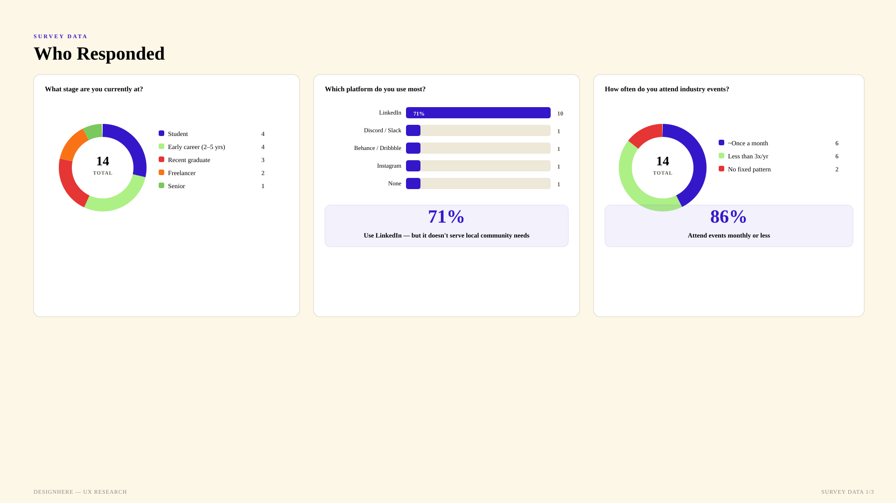
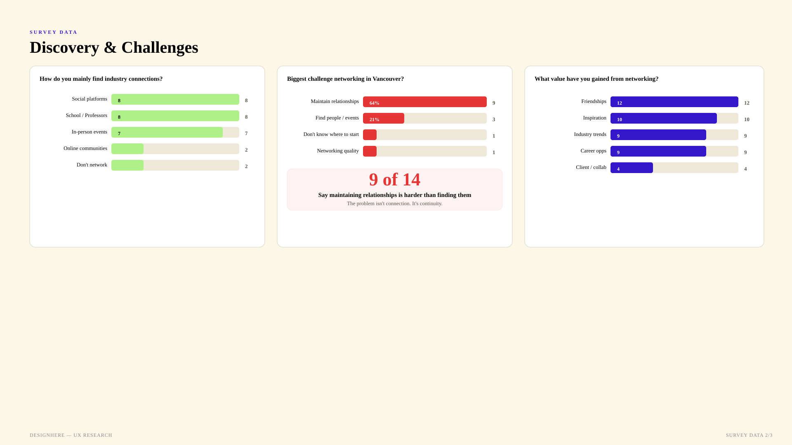
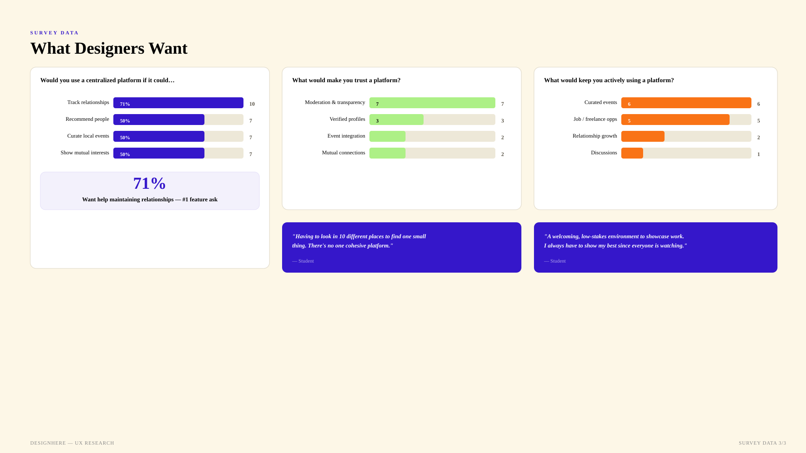
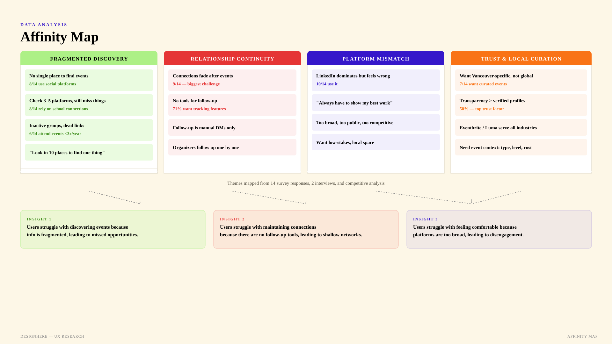
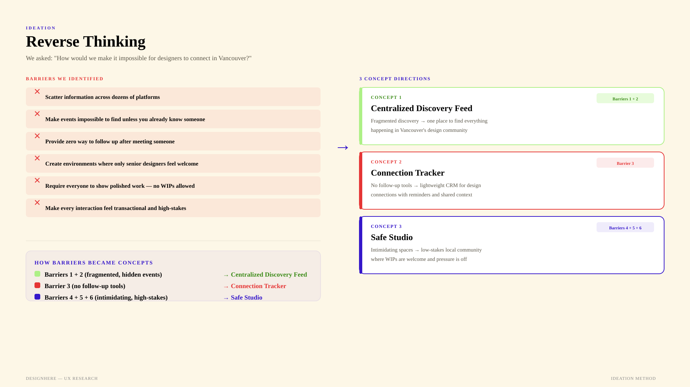
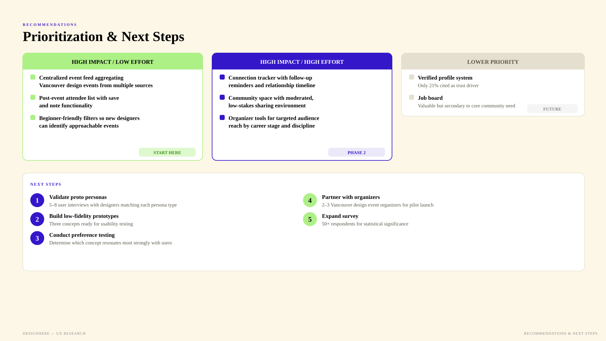

DesignHere
connecting Vancouver's design community
The Problem
Vancouver has a real design community — it shows up at studio crits, small meetups, and the back rooms of East Van cafés. But there's no single place to find any of it. Events live on Eventbrite, Luma, Instagram stories, Discord servers, and whatever your professor forwarded last week. You find out about half of them the day after they happen.
And when you do show up, the connection usually ends in the parking lot. No tool for follow-up, no shared thread, no way to remember who was interesting. Most people fall back to LinkedIn — which is global, performative, and built for getting hired, not for being present in the city you already live in.
Problem statement: New designers have difficulty connecting with the design community because there is no way to search or find the community in Vancouver.
How might we…
…help new designers find a meaningful network with others in the industry.
Mapping the Pattern
Yuki and I ran a mixed-methods study across six weeks — survey, interviews, competitive analysis, and proto personas — targeting designers at different career stages, all based in Vancouver. I led UX flow design, lo-fi prototyping, and data collection; Yuki led competitor research, survey design, and data analysis. We stayed tight on scope so fourteen responses could still tell us something real.

Three user types
Early in the process we realized DesignHere wouldn't work if we only designed for one side of the room. The platform needed three audiences to hold together — the designer looking for a community, the organizer trying to reach them, and the moderator keeping the signal high.
Proto personas
One proto persona per user type — each shaped around a distinct job to be done, same underlying gap in the ecosystem.
Survey findings
Two charts did most of the work. The first mapped current discovery behaviour and the challenges people named unprompted. The second mapped what they'd actually want from a platform that understood them.


The headline: 9 of 14 (64%) said maintaining relationships is harder than finding them. 71% said a tool that helped them track connections would be the most valuable feature. And 50% said transparent moderation mattered more than verified profiles — people don't want gatekeepers, they want accountability.
Affinity themes
Yuki and I pulled every survey quote, interview fragment, and competitive observation onto a shared FigJam board and clustered until the patterns held. Four themes emerged — each pointing at a distinct pain, each eventually becoming an insight.

Three key insights
01. Centralized Event Discovery. Users struggle with discovering events because information is fragmented, leading to missed opportunities.
02. Clear Event Context & Evaluation. Users struggle with evaluating events because of limited context, leading to hesitation.
03. Support Post-Event Engagement. Users struggle with maintaining connections because of lack of follow-up support, leading to shallow engagement.
Competitive positioning
I mapped the landscape on two axes: global vs. local, and professional/formal vs. community/casual. The top half was full — LinkedIn, Dribbble, Behance, Eventbrite. The bottom-right corner — local and community-feeling — was almost empty. That's where DesignHere would sit.
From Insight to Direction
The guiding principle at every step was the same: design for the early-career designer first. If the platform worked for someone two years in and newly relocated, it would work for everyone else.
The key move: reverse thinking
Before brainstorming solutions, we flipped the prompt. Instead of "how do we help Vancouver designers connect?" we asked "how would we make it impossible?" — and listed every barrier we could think of.

Six barriers surfaced. Grouped, they pointed at three distinct concept directions — not a single product, but three shapes the product could take.
Taken together, the three concepts became DesignHere — not either/or, but layered, because the pain points are layered too.
A Home for Design, Here
DesignHere is a responsive web app (PWA) that serves as a focused discovery tool for Vancouver's design scene — centralized discovery, connection tracking, and a low-stakes community space, built for three audiences at once.
Three user flows, one platform
Key design decisions
Structured submission form. Keeps event listings consistent and dramatically reduces the moderation burden before content is ever reviewed.
Tiered trust system. New organizers get reviewed initially, then earn auto-publish privileges over time. Accountability without gatekeeping.
Automated moderation. Rule-based scoring handles the easy calls and scales the platform without scaling the moderation team.
One-tap card-based triage. When human moderation is needed, the work is fast — swipe-style cards, clear decisions, no long forms.
Auto-generated shareable event cards. Every listing produces a social-ready graphic, creating a flywheel where organic shares become the platform's organic growth.
What to build first
We sorted every idea onto an impact/effort matrix so the first build could be small but meaningful — and so the roadmap past it was legible to anyone reading this later.

Next steps
What the Research Showed
The sharpest finding of the project wasn't about features — it was a reframe. Vancouver's design community faces a continuity problem more than a discovery problem. Finding events is fragmented, yes — but the deeper pain is what happens after. Designers have no tools to maintain the connections they make, and that's where the community breaks down.
DesignHere is positioned in a space no competitor currently occupies — a Vancouver-specific, relationship-first design community platform. The strongest opportunity combines all three: local event discovery, relationship maintenance tools, and a safe community space for all levels.
What Worked, What We'd Change
What worked
Pairing a competitive analysis with the survey gave us both landscape context and direct user input — neither alone would have surfaced the continuity insight. The proto personas did real work too: they focused the survey questions around three distinct user types, which is what let the data actually say something specific when it came back.
And the survey itself surprised us. Going in, we assumed discovery was the core problem. The data quietly pushed back — continuity was the real pain — and that reframe changed the direction of the whole design.
What I'd do differently
Expand the sample. Fourteen responses is directional, not definitive. Given another two weeks I'd push for 50+ respondents and add 3–5 more qualitative interviews, weighted toward mid- and senior-career designers to stress-test whether the early-career pain still holds up the ladder.
Test personas against real users earlier. We built proto personas from research, but validating them against real designers mid-project — not just at the end — would have sharpened the brief faster.
Affinity map together, not in shifts. Yuki and I split the clustering work for efficiency and re-synced after. Next time I'd want more team members mapping live at the same time — the pattern recognition gets better when the observations overlap.
What this taught me
Designers talk about community a lot, but community is mostly context — the small, specific things about a place that make showing up feel worth it. The hardest part of this brief wasn't inventing features. It was listening closely enough to hear the reframe that was sitting in the data all along: the problem isn't connection, it's continuity.